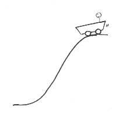
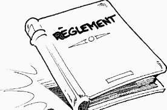
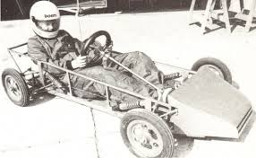

Il y a différentes catégories en fonction de l'âge et donc différents trophés par catégorie.
Catégorie
Description
Age du pilote
C1
Caisse à savon
6-9 ans
C2
Caisse à savon
10-13 ans
C3
Caisse à savon
14-17 ans
C4
Caisse à savon
18-99 ans
Réglement général
Musique pour lire le réglement :
Vêtements des pilotes et copilotes
Combinaison ou 2 pièces comprenant un pantalon et veste à longues manches, un casque intégral
homologué, des chaussures solides et fermées, des gants sans trous (gants de cycliste et de laine
interdits). L’équipement complet devra protéger l’intégralité du corps de manière efficace. Une
minerve de type karting est conseillée. Pour les équipements spécifiques obligatoires, voir règlement
par catégorie.
L’équipement complet sera obligatoire pour tous pendant la descente et la remontée (en traction, sur
pont de camion, sur remorque ou plateau) des véhicules de courses.
Les tests
Ils sont permis jusqu'au poids maximum de chaque catégorie, mais ils doivent être fixés solidement au
châssis du véhicule de course, sans possibilité de desserrement pendant le parcours. En cas de
dépassement de la limite de poids autorisée, le pilote est disqualifié pour la manche où la limite
autorisée de poids été dépassée. L'organisateur doit permettre au pilote de peser son véhicule de
course avant et même à tout moment de la compétition.
énergie motrice
Tous dispositifs aptes à fournir de l'énergie au véhicule de course, comme moteur électrique, ressorts,
pédales, volants, manivelles, etc. sont interdits dans toutes les catégories. L'unique énergie admise
est l’énergie gravitationnelle. L'emploi de batteries à acide est interdit même pour l'éclairage.

Compteurs de vitesse et chronomètres
Ils sont autorisés si fixés avant le Contrôle technique.
Remorquage
Sauf pour la catégorie C7 (Carrioli) des points d'attache fixés solidement à l'avant et à l'arrière de
chaque véhicule de course sont obligatoires. Chaque véhicule de course possédera sa propre corde
ou sangle de remorquage d'au moins 1,5 mètres de long, d'une résistance de plus de 700kg et muni
à chaque extrémité de mousquetons de même résistance. L'usage de câble métallique est interdit.
Géométrie des véhicules
Des systèmes de réglage de la géométrie et de la garde au sol ne sont permis qu’à la condition qu’ils
ne puissent pas être actionnés pendant le parcours.
Lubrification et refroidissement
Les systèmes de lubrification ou de refroidissement des organes tournants pendant le parcours sont
interdits (par exemple réservoirs, aérosol, etc.).
Numéros de course
Les chiffres doivent être de couleur noire sur fond blanc d'une hauteur minimale de 100 mm. Pour le
positionnement des numéros, appliquer le règlement de chaque catégorie.
Responsabilité
Le propriétaire et le pilote (ou son représentant légal) se rendent responsable de ce qui est construit
et installé sur le véhicule de course y compris les dimensions de châssis, des roues, (le gonflage des
pneumatiques est sous la responsabilité du pilote ou des parents), ses axes, freins etc.
Contrôle technique
Le contrôle technique (y compris le pesage) pourra être effectué à tout moment de la compétition,
même après la fin mais avant la validation des résultats. Ceci vaut surtout pour les modifications
pouvant être apportées aux différents véhicules de course pendant la durée de la compétition et ceci
après le premier Contrôle technique officiel. Le poids du véhicule de course doit rester le même
pendant toute la durée de la course. Le pilote (et le copilote dans les catégories C5 à C7) se tiennent
à la disposition du Commissaire technique en cas de contrôle technique ou pesage. Toutes les
décisions des Commissaires techniques seront soumises au comité de la C.E.C.C.A.S. et seront
irrévocables.
Chaque pilotes et copilotes aux contrôles techniques doivent présenter son équipement (casque,
gants, protections obligatoires, habillement).
Réglement de construction et de sécurité

Châssis
Le châssis doit être construit en n'utilisant que des matériaux solides qui garantissent l'invariabilité des
diamètres et paramètres techniques donnés par le règlement. Tous les assemblages doivent être
solides et réalisés par des soudures, vis, rivets ou colles de résistance suffisante,
(BOB CAR UNIQUEMENT SOUDURE). La construction du châssis reste libre au constructeur, du
moment qu’elle soit soudée, de telle façon à ce que les assemblages soient rigides et ne permettent
pas la torsion inélastique du châssis. La flexibilité du châssis est issue uniquement de la flexibilité des
matériaux utilisés. Les écrous doivent être assurés par des goupilles, des contre-écrous, des bagues
d'arrêt en Nylon (écrou Nylstop) ou des colles et pâtes de freinage de filets.
Définition châssis.
Cadre fixe ou mobile, en bois ou en métal, qui entoure ou supporte. Assemblage rectangulaire qui
supporte la carrosserie d’un véhicule.
Plancher Le plancher peut-être constitué de plusieurs pièces, il doit protéger l'équipage sur toute la longueur de
leurs corps et doit être assemblé au châssis. L'interposition de caoutchouc ou plastique d'une
épaisseur maximum de 2 mm est autorisée.
Carrosserie Si elle est autorisée dans la catégorie, la carrosserie doit être de construction solide. Les matériaux de
construction sont libres, comme la forme de la carrosserie. La carrosserie peut être d'une ou plusieurs
pièces, mais facilement démontables en cas de contrôle. Pour la sécurité de l'équipage, il faut éliminer
les aspérités anguleuses ou pointues (en intérieur et même extérieur). Prévoir des rayons minimums
de 5 mm. La carrosserie doit être fixée solidement au châssis sans la possibilité de desserrement
pendant le parcours. Dans les catégories C1 à C4 la carrosserie d'une hauteur minimale de 200 mm à
partir du bord bas du châssis doit couvrir le devant et les côtés du véhicule de course. Si elle est
fermée, la partie ouvrante doit être fixée sûrement à la carrosserie principale ou au châssis et
l'ouverture doit pouvoir s'effectuer de l'intérieur et de l’extérieur du véhicule de course. Pour une
meilleure accessibilité de la rampe de départ, un angle d'attaque minimum de 10 degrés est
recommandé. En cas de rigidité insuffisante de la partie avant de la carrosserie un arceau de renfort
est obligatoire. Les jambes du pilote doivent être protégées par un arceau, en cas de retournement.
(voir figure 9). La construction de la caisse doit être faite en toute sécurité pour le pilote.
Pare-brise Le pare-brise doit être réalisé avec un matériau qui ne puisse pas se briser. S’il est d’une épaisseur
inférieur à 4 mm, il doit être protégé sur son épaisseur par du bandage plastique ou caoutchouc. Si
l'épaisseur est supérieure à 4 mm il suffit d'arrondir le bord.
Axes Sauf pour la catégorie C7 (Carrioli) les axes doivent être de structure acier, et fixés solidement aux
essieux ou au châssis sans la possibilité de flexion. Par cela on comprend même la possibilité de
fixation de l'axe au châssis en utilisant un fourreau avec des roulements dans lesquelles elle peut se
pivoter librement.

Direction La direction doit avoir un jeu minimum. Pour toutes les catégories sauf celle de C7 (Carrioli) elle peut
s'effectuer sur toutes les roues.
Freins Dans les catégories C1, C2, C3, C4 et C6 le système de freins hydraulique sur tous les quatre roues
doit être à double circuit, quel que soit le schéma .
Harnais Le harnais est obligatoire pour toutes les catégories C1 à C4, système 3 points minimums, de type
rallye. Les enrouleurs sont interdits même bloqués. Le harnais doit être porté serré pendant tout le
parcours (descente et remontée). Le harnais de protection du pilote doit passer sur l’arceau ou sur le
siège si le siège est suffisament solide .
Arceau de sécurité L'arceau de sécurité est obligatoire pour les catégories C1 à C4. Il doit être fixé solidement au châssis
sur chaque coté et retenu par un contrefort fixé à l'arrière du châssis .
Le tube utilisé doit être de diamètre minimum 25 mm, épaisseur minimum 2 mm. La droite de jonction
entre le sommet de l'arceau de sécurité et le point le plus haut de la partie avant de la carrosserie doit
passer à 100 mm au minimum du casque du pilote en position prêt au départ casque
Une réhausse d’arceau est acceptable, à condition qu’elle soit soudée à l’arceau existant et que les
mesures intérieures ne dépassent pas 200 mm de hauteur et 100 mm de largeur
Pour les caisses construites en 2003, ne plus l’ajouter.
Le raccordement des contreforts de l’arceau doivent être soudés ou boulonnés à celui-ci, sans le
percer
La fixation de l’arceau sur le chassis ne doit pas diminuer la résistance de la protection. En
conséquence, le type de fixation décrit ci-dessous est à supprimer
La fixation de l’arceau sur le chassis conseillé
Si le véhicule de course est constitué d’une carrosserie autoporteuse, l’arceau de sécurité doit être
fixé au niveau de la partie inférieure du véhicule de course.
Pression des pneus La pression max. des pneumatiques pour les catégories C1 à C6 est limitée 4,9 Bar et C8 à 3.5 Bar.
Aucune tolérance ne sera permise. Si la pression mesurée d'un véhicule de course est au-dessus, le
pilote sera immédiatement exclu de la manche ou cette limite de pression a été dépassée.
Tout pilote ne respectant pas la norme de pression ci-dessus ou celle (inférieur à 4,9 Bar) indiquée
sur le pneu, en assumera l’entière responsabilité en cas d’accident.
(Voir paragraphe. J responsabilité)
Contrôle de la pression des pneus : Pour les catégories C1 à C8, la valve de gonflage doit être
accessible en toutes circonstances aussi bien à l’avant qu’à l’arrière.
Piste Toutes marques ou signes d’aide aux trajectoires et/ou aux freinages sont interdits sur la piste. (Les
routes, protections, etc.)
Sanctions Le non-respect du présent règlement, entraînera l’exclusion de la compétition ceci sans aucune
dérogation dans le cas d’une course CECCAS.